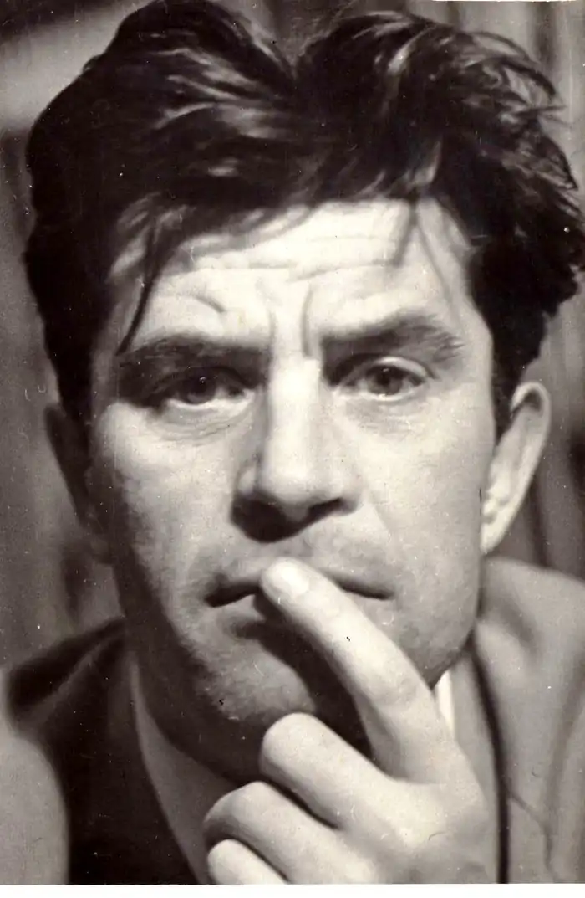
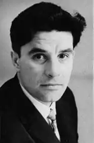
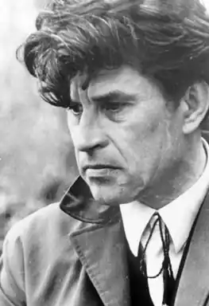
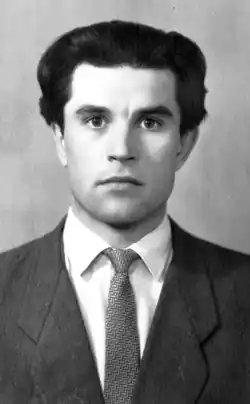
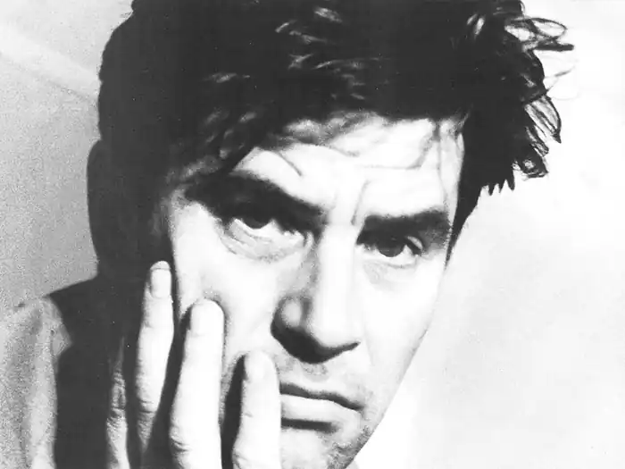
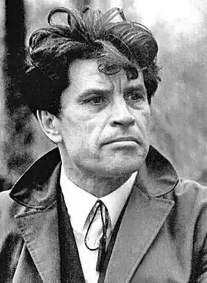

ГРИГІР ТЮТЮННИК
(1931 — 1980)
Григір Михайлович Тютюнник народився 5 грудня 1931р. в с. Шилівка на Полтавщині в селянській родині. Тяжкі умови дитинства відіграли згодом істотну роль і у виборі тем та сюжетів, і у формуванні світосприймання майбутнього письменника з його драматичністю як основною домінантою: рання втрата батька, життя вдалині від матері, завдані війною моральні й матеріальні втрати тощо. Після визволення України від фашистської навали Тютюнник закінчив п'ятий клас сільської школи і вступив до ремісничого училища; працював на заводі імені Малишева у Харкові, в колгоспі, на будівництві Миронівської ДРЕС, на відбудові шахт у Донбасі. Після служби у Військово-Морському Флоті (у Владивостоку), де вчився у вечірній школі, вперше пробує писати (російською мовою). Значний вплив на формування його літературних смаків, на ставлення до літературної праці справив його брат — письменник Григорій Тютюнник. Уже відтоді поступово формувались характерні прикмети творчої індивідуальності молодого письменника: постійне невдоволення собою, наполегливі пошуки точного слова — найпотрібнішого, найвиразнішого, — тривале обдумування кожного твору (і згодом, досить часто, — попередня, до викладу на папері, "апробація" їх в усних розповідях). Період його літературного учнівства лишився прихованим від сторонніх очей. Перша зустріч письменника з читачем (за підписом "Григорий Тютюнник-Ташанский") — оповідання "В сутінки" (рос. мовою: Крестьянка.— 1961. — № 5). Після закінчення Харківського університету (1962) Гр. Тютюнник учителював у вечірній школі на Донбасі. В 1963 — 1964 pp. працює в редакції газети "Літературна Україна", публікує в ній кілька нарисів на різні теми та перші оповідання: "Дивак", "Рожевий морок", "Кленовий пагін", "Сито, сито...". Молодіжні журнали "Дніпро" та "Зміна" вміщують новели "Місячної ночі", "Зав'язь", "На згарищі", "У сутінки", "Чудасія", "Смерть кавалера". Зацікавившись кінематографом, Гр. Тютюнник працює у сценарній майстерні Київської кіностудії ім. О. Довженка, — створює літературний сценарій за романом Г. Тютюнника "Вир", рецензує твори колег-кінодраматургів та фільми. Переходить на редакторсько-видавничу роботу, а згодом повністю віддається літературній творчості. 1966p. вийшла перша його книжка "Зав'язь" (вид-во "Молодь"). "Зав'язь" була однією з тих книжок, які засвідчили новий злет української прози і зробили популярним ім'я Гр. Тютюнника, воднораз вирізнивши його серед творчої молоді. Журнал "Дружба народов" відзначив оповідання Гр. Тютюнника як кращі в своїх публікаціях 1967р. У 1968р. "Литературная газета" оголосила всесоюзний конкурс на краще оповідання. Гр. Тютюннику було присуджено премію за оповідання "Деревій". Твір дав назву збірці (1969), до якої увійшли повість "Облога" та кілька оповідань. У 70-ті роки з'являються у пресі — республіканській ("Вітчизна", "Дніпро", "Ранок") та всесоюзній ("Дружба народов", "Сельская молодежь", "Студенческий меридиан") нові твори Гр. Тютюнника. У Талліні виходить збірка його оповідань естонською мовою (1974). Журнал "Сельская молодежь" у 1979р. (№ 1) повідомляє, що його нагороджено медаллю "Золоте перо" — за багаторічне творче співробітництво. Виходять друком збірки "Батьківські пороги", "Крайнебо" (Київ, 1972, 1975), "Отчие пороги" (Москва, 1975), "Коріння" (Київ, 1978). Тютюнник перекладав українською мовою твори В. Шукшина: 1978р. у видавництві "Молодь" вийшла збірка оповідань та кіноповістей "Калина червона"; він перекладав і твори М. Горького ("Серце Данко"), І. Соколова-Микитова ("Рік у лісі") та ін. На початку 70-х років Гр. Тютюнник працював у видавництві "Веселка". Серед його продукції — настільна книга-календар для дітей "Дванадцять місяців" (1974), у підборі матеріалів до якої виявився його літературний смак, мистецька вимогливість, повага до юного читача. Пише він і сам твори для дітей, видає збірки оповідань "Ласочка" (1970), казок "Степова казка" (1973), які по-новому розкрили талант письменника. За книги "Климко" (1976) і "Вогник далеко в степу" (1979) Григорові Тютюннику присуджено республіканську літературну премію ім. Лесі Українки 1980p. В останні місяці життя письменник працював над повістю "Житіє Артема Безвіконного". Не будучи в змозі в усій повноті реалізувати свій талант в атмосфері чиновницького диктату над літературою, 6 березня 1980р. Григір Тютюнник покінчив життя самогубством. 1989р. його творчість була посмертно відзначена Державною премією ім. Т. Г. Шевченка.